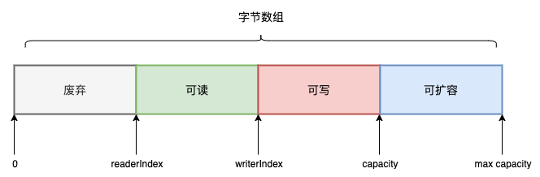
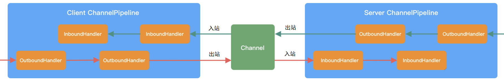

透彻理解Java网络编程（九）——Netty概述
从本章开始，我将对Netty这个基于Java NIO实现的开源网络通信框架进行讲解。Netty在高性能网络编程中有着大量的应用，比如很多公司会基于Netty来实现OA、消息网关、云盘等涉及大量客户端并发访问的应用，一些开源中间件也将Netty作为底层的网络通讯组件，比如RocketMQ、ElasticSearch、Dubbo、Hadoop等。
那么，既然Netty是基于Java NIO实现的，为什么我们不直接使用Java NIO呢？比如Kafka、Zookeeper就是直接使用Java NIO来封装网络通信模块。我在上一章已经给出了一个基于Java NIO实现Reactor模式的示例，从这个示例大家应该也可以感受到，原生的Java NIO编程，对编程能力要求比较高，需要处理连接异常、网络闪断、拆包粘包、网络拥塞、长短连接等各种各样的网络通讯细节问题，对于大部分人和中小公司来说，这是一件非常困难且耗时的事情。
并且，原生Java NIO还有一个臭名昭著的Epoll Bug，它会导致Selector空轮询，最终导致CPU 100%。官方声称在JDK 1.6版本的update 18修复了该问题，但是直到JDK1.7版本该问题仍旧存在，只不过该Bug发生概率降低了一些而已，它并没有被根本解决。
因此，Netty这个网络通信框架诞生了，Netty在底层帮我们处理了各类网络通讯细节问题，并且做了很多性能优化，也提供了很多高阶功能。基于Netty简化后的网络编程API，我们只需要专注于业务处理逻辑，很轻松的开发出高性能、高并发、高可靠的应用程序。
关于Netty框架的学习，网络上的资料比较零散，我个人相对比较推荐的是两份资料：
一、Netty入门
本节，我先通过一个Netty demo，讲解Netty的基本使用。后续章节，我会带领大家分析Netty源码，一探Netty底层原理，看它究竟对Java NIO做了哪些封装，是如何实现高性能、高并发、高可靠的网络通讯架构的。
首先，搭建一个示例maven工程，引入Netty的pom依赖：
<dependency>
<groupId>io.netty</groupId>
<artifactId>netty-all</artifactId>
<version>4.1.63.Final</version>
</dependency>
注意：由于Netty官方废弃了
Netty 5.X版本，所以我这里使用4.X版本，该版本目前官方仍在持续维护。
1.1 服务端示例
首先，我们来开发Netty服务端的程序——NettyServer和NettyServerHandler：
- NettyServer：基于Netty的API实现的一个网络服务端类，大部分都是一些Boilerplate Code；
- NettyServerHandler：我们自己的服务端业务处理类，主要用来处理客户端发送过来的请求。
NettyServer比较简单，核心是定义了parentGroup和childGroup这两个线程池，它们的本质就是我上一章讲解的主从Reactor模式中的mainReactor和subReactor：
public class NettyServer {
public static void main(String[] args) {
// Acceptor线程池
EventLoopGroup parentGroup = new NioEventLoopGroup();
// Processor线程池
EventLoopGroup childGroup = new NioEventLoopGroup();
try {
// Netty Server启动类
ServerBootstrap serverBootstrap = new ServerBootstrap();
serverBootstrap.group(parentGroup, childGroup)
.channel(NioServerSocketChannel.class) // 监听指定端口的ServerSocketChannel
.option(ChannelOption.SO_KEEPALIVE, true) // 对ServerSocketChannel的一些配置
.option(ChannelOption.SO_BACKLOG, 1024)
.childHandler(new ChannelInitializer<SocketChannel>() { // 定义用来处理每个SocketChannel的处理链，每个建立连接的SocketChannel，有一个独立的pipeline
@Override
protected void initChannel(SocketChannel socketChannel) {
// 在pipeline最后添加一个NettyServerHandler处理类，也就是我们自己的业务处理类
socketChannel.pipeline().addLast(new NettyServerHandler());
}
});
// 同步等待Netty Server启动，并监控端口
ChannelFuture channelFuture = serverBootstrap.bind(50070).sync();
// 同步等待Netty Server关闭
channelFuture.channel().closeFuture().sync();
} catch (Exception e) {
e.printStackTrace();
} finally {
parentGroup.shutdownGracefully();
childGroup.shutdownGracefully();
}
}
}
我们自己的业务处理类NettyServerHandler：
public class NettyServerHandler extends ChannelInboundHandlerAdapter {
@Override
public void channelRead(ChannelHandlerContext ctx, Object msg) throws Exception {
// 1.读取请求的内容
ByteBuf requestBuffer = (ByteBuf) msg;
byte[] requestBytes = new byte[requestBuffer.readableBytes()];
requestBuffer.readBytes(requestBytes);
String request = new String(requestBytes, "UTF-8");
System.out.println("接收到的请求：" + request);
// 2.写入响应
String response = "你好，我收到你的消息了";
ByteBuf responseBuffer = Unpooled.copiedBuffer(response.getBytes());
ctx.write(responseBuffer);
}
@Override
public void channelReadComplete(ChannelHandlerContext ctx) throws Exception {
// flush客户端响应
ctx.flush();
}
@Override
public void exceptionCaught(ChannelHandlerContext ctx, Throwable cause) throws Exception {
cause.printStackTrace();
// 出现异常时，关闭与客户端的连接
ctx.close();
}
}
1.2 客户端示例
接着，来开发Netty客户端的程序——NettyClient和NettyClientHandler：
- NettyClient：基于Netty的API实现的一个网络客户端类，大部分都是一些Boilerplate Code；
- NettyClientHandler：我们自己的客户端业务处理类，主要用来处理服务端的响应。
NettyClient的代码与Server端类似，区别就是使用了一个Bootstrap启动类，并且需要显式与Netty Server建立连接：
public class NettyClient {
public static void main(String[] args) {
EventLoopGroup group = new NioEventLoopGroup();
try {
Bootstrap bootstrap = new Bootstrap();
bootstrap.group(group)
.channel(NioSocketChannel.class)
.option(ChannelOption.TCP_NODELAY, true)
.handler(new ChannelInitializer<Channel>() {// 定义用来处理每个SocketChannel的处理链，每个SocketChannel有一个独立的pipeline
@Override
protected void initChannel(Channel channel) {
// 在pipeline最后添加一个NettyClientHandler处理类，也就是我们自己的业务处理类
channel.pipeline().addLast(new NettyClientHandler());
}
});
// 连接指定Netty Server，连接完成后main线程会阻塞在这里
ChannelFuture channelFuture = bootstrap.connect("127.0.0.1", 50070).sync();
// 关闭客户端
channelFuture.channel().closeFuture().sync();
} catch (Exception e) {
e.printStackTrace();
} finally {
group.shutdownGracefully().sync();
}
}
}
我们自己的业务处理类NettyClientHandler：
public class NettyClientHandler extends ChannelInboundHandlerAdapter {
private ByteBuf requestBuffer;
public NettyClientHandler() {
byte[] requestBytes = "你好，我发送第一条消息".getBytes();
requestBuffer = Unpooled.buffer(requestBytes.length);
requestBuffer.writeBytes(requestBytes);
}
/**
* 与Server建立完成连接后，调用此方法
* @param ctx
* @throws Exception
*/
@Override
public void channelActive(ChannelHandlerContext ctx) throws Exception {
// 建立连接
ctx.writeAndFlush(requestBuffer);
}
/**
* 当收到服务端的消息时，调用此方法
* @param ctx
* @param msg
* @throws Exception
*/
@Override
public void channelRead(ChannelHandlerContext ctx, Object msg) throws Exception {
// 1.读取服务端的响应
ByteBuf responseBuffer = (ByteBuf) msg;
byte[] responseBytes = new byte[responseBuffer.readableBytes()];
responseBuffer.readBytes(responseBytes);
String response = new String(responseBytes, "UTF-8");
System.out.println("接收到服务端的响应：" + response);
}
@Override
public void exceptionCaught(ChannelHandlerContext ctx, Throwable cause) throws Exception {
cause.printStackTrace();
ctx.close();
}
}
二、核心组件
通过第一节的示例讲解，大家应该对Netty有了一个初步印象。Netty的编程基于一定的范式，常用的组件就是那么几个。本节，我先对Netty的常用核心组件进行讲解，后续章节再对各个组件的使用详细讲解，并对它们的源码进行一定程度的分析。
2.1 Bootstrap
Bootstrap类是Netty提供的一个便利工厂类，可以通过它来完成Netty客户端或服务端的组件组装，以及Netty程序的初始化。
- ServerBootstrap：Netty服务端的组件组装工厂类；
- Bootstrap：Netty客户端的组件组装工厂类。
2.2 Channel
在Netty中，通道（Channel）是核心概念之一，代表着网络连接。Channel负责与对端进行网络通信：既可以写入数据到对端，也可以从对端读取数据。
Netty没有直接使用Java NIO的Channel通道，而是自己对Channel通道进行了封装。对应于不同的协议，Netty中常见的通道类型如下：
- NioSocketChannel：TCP Socket传输通道；
- NioServerSocketChannel：TCP Socket服务器端监听通道；
- NioDatagramChannel：UDP传输通道；
- NioSctpChannel：Sctp传输通道；
- NioSctpServerChannel：Sctp服务器端监听通道；
- OioSocketChannel：同步阻塞式TCP Socket传输通道；
- OioServerSocketChannel：同步阻塞式TCP Socket服务器端监听通道；
- OioDatagramChannel：同步阻塞式UDP传输通道；
- OioSctpChannel：同步阻塞式Sctp传输通道；
- OioSctpServerChannel：同步阻塞式Sctp服务器端监听通道。
本系列，我只介绍最核心的NioSocketChannel和NioServerSocketChannel。
在Netty的NioSocketChannel内部封装了一个Java NIO的SelectableChannel成员。通过这个内部的Java NIO通道，Netty的NioSocketChannel通道上的IO操作，最终会落地到Java NIO的SelectableChannel底层通道：
在Netty中，将有接收关系的NioServerSocketChannel和NioSocketChannel，叫作父子通道。其中NioServerSocketChannel是服务端负责监听和接收客户端连接的，也叫父通道（Parent Channel）。对于每一个接收到的NioSocketChannel传输类通道，也叫子通道（Child Channel）。
本质上，Netty中的父子通道其实可以理解成Java NIO中的ServerSocketChannel和SocketChannel。
通道的抽象类AbstractChannel的构造函数如下：
protected AbstractChannel(Channel parent) {
this.parent = parent; // 父通道
id = newId();
unsafe = new Unsafe(); // 底层的NIO 通道,完成实际的IO操作
pipeline = new ChannelPipeline(); // 一条通道，拥有一条流水线
}
几乎所有的通道实现类都继承了AbstractChannel抽象类，都拥有上面的parent和pipeline两个属性成员：
- parent：每一条通道都会有一个父通道。对于
NioServerSocketChannel来说，其父通道为null；而对于NioSocketChannel来说，其父通道为NioServerSocketChannel； - pipeline：每个通道拥有一条属于自己的ChannelPipeline处理器流水线，Netty对通道进行初始化时，默认将pipeline初始化为
DefaultChannelPipeline实例。
2.3 Handler
在Netty中，Handler是核心的业务处理组件，从开发人员的视角看，有入站和出站两种类型。
- 入站：触发的方向为自底向上，即从底层Channel往Hander处理器，一般都继承
ChannelInboundHandler入站处理器。当数据或者信息入站到Netty通道时，Netty将触发ChannelInboundHandler对应的入站API，进行入站操作处理； - 出站：触发的方向为自顶向下，即从Hander处理器往底层Channel通道，一般都继承
ChannelOutboundHandler出站处理器。当业务处理完成后，需要操作Java NIO底层通道时，通过一系列的ChannelOutboundHandler出站处理器，完成Netty通道到底层通道的操作。
ChannelInboundHandler的默认实现为ChannelInboundHandlerAdapter，叫作通道入站处理适配器。ChanneOutboundHandler的默认实现为ChanneloutBoundHandlerAdapter，叫作通道出站处理适配器。
这两个默认的通道处理适配器，分别实现了入站操作和出站操作的基本功能。如果要实现自己的业务处理器，不需要从零开始去实现处理器的接口，只需要继承通道处理适配器即可。
2.4 ChannelPipeline
一条Netty通道需要很多的Handler业务处理器来处理业务。每条通道内部都有一条流水线（Pipeline）将Handler装配起来。
Netty的业务处理器流水线ChannelPipeline是基于责任链设计模式（Chain of Responsibility）来设计的，内部是一个双向链表结构，能够支持动态添加、删除Handler业务处理器。
请求在入站处理器中的流动次序是从前到后，在出站处理器中的流动次序是从后往前。
2.5 ChannelHandlerContext
在Handler业务处理器被添加到流水线Pipeline中时，会创建一个通道处理器上下文ChannelHandlerContext，它代表了ChannelHandler和ChannelPipeline之间的关联。
ChannelHandlerContext中包含了有许多方法，主要可以分为两类：
- 第一类是获取上下文所关联的Netty组件实例，如所关联的通道、流水线、上下文内部的Handler业务处理器等；
- 第二类是入站和出站处理方法。
在Channel、ChannelPipeline、ChannelHandlerContext三个类中，会有同样的出站和入站处理方法，但是它们的行为有所不同：
- 如果通过Channel或ChannelPipeline来调用，则会在整条流水线中传播；
- 如果是通过ChannelHandlerContext来调用，则只会从当前的节点开始执行Handler业务处理器，并传播到同类型Handler的下一站。
所以，总结一下，Channel、Handler、ChannelHandlerContext三者的关系为：
- 每个Channel通道拥有一条ChannelPipeline通道流水线，流水线节点为ChannelHandlerContext上下文对象，每一个ChannelHandlerContext中包裹了一个ChannelHandler处理器；
- 在ChannelHandler的入站/出站处理方法中，Netty都会传递一个ChannelHandlerContext实例作为参数。在业务处理中，通过ChannelHandlerContext可以获取ChannelPipeline实例或者Channel实例。

2.6 ByteBuf
ByteBuf是一个字节容器，内部是一个字节数组。 Netty没有直接使用Java NIO中的ByteBuffer，而是自己是实现了一个BtyeBuf。与Java NIO的ByteBuffer相比，ByteBuf的优势如下：
- Pooling（池化），减少了内存复制和GC，提升了效率；
- 支持自动扩容，使用更方便。
ByteBuf通过三个整型属性有效地区分可读数据和可写数据，使得读写之间相互没有冲突。这三个属性定义在AbstractByteBuf抽象类中，分别是：
- readerIndex（读指针）：指示读取的起始位置。每读取一个字节，readerIndex自动增加1。一旦readerIndex与writerIndex相等，则表示ByteBuf不可读了；
- writerIndex（写指针）：指示写入的起始位置。每写一个字节，writerIndex自动增加1。一旦增加到writerIndex与capacity()容量相等，则表示ByteBuf已经不可写了；
- maxCapacity（最大容量）：表示ByteBuf可以扩容的最大容量。当向ByteBuf写数据的时候，如果容量不足，可以进行扩容。扩容的最大限度由maxCapacity的值来设定，超过maxCapacity就会报错。
从逻辑上来讲，ByteBuf内部可以分为四个部分，具体如下图所示：

- 废弃：表示已经使用完的废弃的无效字节；
- 可读：ByteBuf保存的有效数据，从ByteBuf中读取的数据都来自这一部分；
- 可写：写入到ByteBuf的数据都会写到这一部分中；
- 可扩容：该ByteBuf最多还能扩容的大小。
2.7 Decoder
Netty从底层的Java通道读取字节数据，传入Netty通道的流水线中，随后开始入站处理。在入站处理过程中，需要将ByteBuf字节数据，解码成Java POJO对象。这个解码过程，可以通过Netty的Decoder解码器去完成。
所有的Netty中的Decoder解码器，都是Inbound入站处理器类型，都直接或者间接地实现了ChannelInboundHandler接口，负责处理“入站数据”。解码器能将上一站Inbound入站处理器传过来的输入（Input）数据，进行数据的解码或者格式转换，然后输出（Output）到下一站Inbound入站处理器。
2.8 Encoder
在Netty的业务处理完成后，业务处理的结果往往是某个Java POJO对象，需要编码成最终的ByteBuf二进制类型，通过流水线写入到底层的Java通道。
所有的Netty中的Encoder编码器，都是Outbound出站处理器类型，都直接或者间接地实现了ChannelOutboundHandler接口，负责处理“出站数据”。编码器将上一站Outbound出站处理器传过来的输入（Input）数据进行编码或者格式转换，然后传递到下一站ChannelOutboundHandler出站处理器。
三、架构剖析
通过上述示例，我们大概了解了Netty整体是基于 主从Reactor模式 实现的一个网络通信框架，它的编程遵循一定的“范式”，比如上述的NettyClient和NettyServer，很多都是一些Boilerplate Code。接下来，我讲解Netty的整体架构和一些核心设计思路，为后续的源码分析作铺垫。
3.1 整体架构
Netty 官网给出了有关 Netty 的整体功能模块结构，我们可以清晰地看出 Netty 的整体架构分为三个模块：

Core 核心层
Core 核心层是 Netty 最精华的内容，它提供了底层网络通信的通用抽象和实现，包括可扩展的事件模型、通用的通信 API、支持零拷贝的 ByteBuf 等。
Protocol Support 协议支持层
协议支持层基本上覆盖了主流协议的编解码实现，如 HTTP、SSL、Protobuf、压缩、大文件传输、WebSocket、文本、二进制等主流协议，此外 Netty 还支持自定义应用层协议。Netty 丰富的协议支持降低了用户的开发成本，基于 Netty 我们可以快速开发 HTTP、WebSocket 等服务。
Transport Service 传输服务层
传输服务层提供了网络传输能力的定义和实现方法。它支持 Socket、HTTP 隧道、虚拟机管道等传输方式。Netty 对 TCP、UDP 等数据传输做了抽象和封装，用户可以更聚焦在业务逻辑实现上，而不必关系底层数据传输的细节。
3.2 逻辑架构
我们再来看Netty的逻辑架构，可以看到Netty 采用了典型的三层网络架构进行设计和开发：
网络通信层
网络通信层的职责是执行网络 I/O 的操作。它支持多种网络协议和 I/O 模型的连接操作。当网络数据读取到内核缓冲区后，会触发各种网络事件，这些网络事件会分发给事件调度层进行处理。
网络通信层的核心组件包含BootStrap、ServerBootStrap、Channel三个组件。BootStrap 和 ServerBootStrap 分别负责客户端和服务端的启动，它们是非常强大的辅助工具类；Channel 是网络通信的载体，提供了与底层 Socket 交互的能力。
事件调度层
事件调度层的职责是通过 Reactor 线程模型对各类事件进行聚合处理，通过 Selector 主循环线程集成多种事件（ I/O 事件、信号事件、定时事件等），实际的业务处理逻辑是交由服务编排层中相关的 Handler 完成。
事件调度层的核心组件包括 EventLoopGroup、EventLoop。
EventLoopGroup 本质是一个线程池，主要负责接收 I/O 请求，并分配线程执行处理请求。EventLoopGroups、EventLoop 与 Channel 的关系如下：
- 一个 EventLoopGroup 往往包含一个或者多个 EventLoop。EventLoop 用于处理 Channel 生命周期内的所有 I/O 事件，如 accept、connect、read、write 等 I/O 事件；
- EventLoop 同一时间会与一个线程绑定，每个 EventLoop 负责处理多个 Channel；
- 每新建一个 Channel，EventLoopGroup 会选择一个 EventLoop 与其绑定，该 Channel 在生命周期内都可以对 EventLoop 进行多次绑定和解绑。

Netty 通过创建不同的 EventLoopGroup 参数配置，就可以支持 Reactor 的三种线程模型：
- 单线程模型：EventLoopGroup 只包含一个 EventLoop，Boss 和 Worker 使用同一个EventLoopGroup；
- 多线程模型：EventLoopGroup 包含多个 EventLoop，Boss 和 Worker 使用同一个EventLoopGroup；
- 主从多线程模型：EventLoopGroup 包含多个 EventLoop，Boss 是主 Reactor，Worker 是从 Reactor，它们分别使用不同的 EventLoopGroup，主 Reactor 负责新的网络连接 Channel 创建，然后把 Channel 注册到从 Reactor。
服务编排层
服务编排层的职责是负责组装各类服务，它是 Netty 的核心处理链，用以实现网络事件的动态编排和有序传播。
服务编排层的核心组件包括 ChannelPipeline、ChannelHandler、ChannelHandlerContext。
ChannelPipeline 是 Netty 的核心编排组件，负责组装各种 ChannelHandler，实际数据的编解码以及加工处理操作都是由 ChannelHandler 完成的。ChannelPipeline 内部通过双向链表将不同的 ChannelHandler 链接在一起。当 I/O 读写事件触发时，ChannelPipeline 采用职责链模式，依次调用 ChannelHandler 链表对 Channel 的数据进行拦截和处理。
ChannelPipeline 本身是线程安全的，每一个Channel 都会绑定一个新的 ChannelPipeline，一个 ChannelPipeline 关联一个 EventLoop，一个 EventLoop 仅会绑定一个线程：
ChannelPipeline 中包含入站 ChannelInboundHandler 和出站 ChannelOutboundHandler 两种处理器，我们结合客户端和服务端的数据收发流程，来理解 Netty 的这两个概念：

以客户端为例，数据从客户端发向服务端，该过程称为出站，反之则称为入站。数据入站会由一系列 InBoundHandler 处理，然后再以相反方向的 OutBoundHandler 处理后完成出站。我们经常使用的编码 Encoder 是出站操作，解码 Decoder 是入站操作。
服务端接收到客户端数据后，需要先经过 Decoder 入站处理后，再通过 Encoder 出站通知客户端。所以客户端和服务端一次完整的请求应答过程可以分为三个步骤：客户端出站（请求数据）、服务端入站（解析数据并执行业务逻辑）、服务端出站（响应结果）。
以上便是 Netty 的逻辑架构，可以看出 Netty 的架构分层设计得非常合理，屏蔽了底层 NIO 以及框架层的实现细节，对于业务开发来说，只需要关注业务逻辑的编排和实现即可。
3.3 线程模型
了解Netty 核心组件的概念以及它的整体/逻辑架构后，我们再来从Netty服务端处理请求的流程，了解下Netty的线程模式。
前面说了，Netty采用了主从Reactor模式，服务端启动时，创建了两个NioEventLoopGroup，它们实际是两个独立的 Reactor 线程池，一个用于监听客户端的连接请求，并与客户端建立 TCP 连接；另一个用于处理 I/O 相关的读写操作或者执行系统 Task、定时任务 Task 等。

上图是Netty服务端处理请求的流程：
- 首先，创建两个
NioEventLoopGroup——boosGroup和workerGroup，我们可以把它们看成独立的线程池，服务端会采用ServerBootStrap进行装配； - boosGroup内部的ServerSocket会监听指定端口，等待客户端的连接请求；
- 当客户端请求建立连接时，boosGroup中的NioEventLoop线程会负责连接的建立，然后将建立完连接的NioSocketChannel交给workerGroup线程池处理；
- workerGroup线程池中有许多NioEventLoop线程，一个NioSocketChannel只能由一个NioEventLoop线程处理；
- NioEventLoop会为每个注册到它内部的NioSocketChannel，创建一条Pipeline流水线，然后将请求交给流水线内部的Handler依次处理。
四、总结
本章，我通过一个示例介绍了Netty的基本使用，并对Netty的整体架构，以及网络请求处理流程进行了讲解，基于这些内容，下一章开始我将分析Netty的源码（基于Netty 4.1.65.Final 版本），整个专栏讲解的思路遵循下面这张思维导读，供读者参考：
读者需要注意，早期的Java网络编程一般是基于
java.net.*包中的Socket和ServerSocket，本质属于同步阻塞IO，这块内容我不会讲解，也是比较基础的内容，我推荐读者可以参考 O'Reilly的书籍《Java网络编程》了解即可。